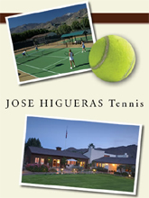

Previous: Learning from the Pros | 🏠 Famous Coaches Home | Next: Tennis principles and foundations
Learning to play
Comprehensive unified tennis knowledge base — Fundamentals, Stroke Analysis, Reference Library, and more
Learning to Play
Jose Higueras
American players hit the ball as well as any players in the world.
If you see how American kids play, I think the forehands and backhands and serves are as good as the players in the rest of the world, but in general they don't play as well in matches. When I watch juniors play matches they often seem “disconnected” from one shot to the next.
I think this is because we don't emphasize point play enough. We don’t emphasize the reasons you should hit the ball to certain places at certain times, or where your court position should be. The way I see it American kids are more used to hitting balls than really playing matches.
The kids don’t play enough practice matches and they don’t understand what the actual meaning and purpose of these matches should be. We have kids that hit the ball as well as anybody, but they don't play as well when it counts.
This problem could also relate to the fact that American juniors play mainly on hard courts. There is very little clay court play. When you play on fast surfaces the majority of the time, I think it's a little tougher to get the feeling of how to play because you have less time to figure things out.
In general Europeans are taught more patterns, and they are taught more about point play. The basic idea underlying this is that every ball that you hit has an effect on your opponent, either positive or negative. And what that effect is depends on how well you execute on every ball.
European players understand patterns and how every shot has an effect.
If you see a top 10 player hit with a guy that's 80 or 100 or 250, I'm not really sure you can tell who's who just by watching their strokes. To really evaluate a player I think you have to see them play.
In general, better players have a better understanding of where they are in relation to their shots. When they start playing points, you can see that the best players hit the ball from the right place on the court. They hit the ball at the right height, with the right pace. They also hit it to the right place more often.
Teaching a player how to play is a lot tougher than just teaching strokes. I would much rather work with somebody with lesser shots, but a good idea how to play than with somebody with good strokes, but no clue where to hit the ball.
If a player has problems with a certain stroke, with a number of repetitions you can address that. But if he's got no idea how to play, it's going to take a lot longer to teach him how to play than to teach him how to do certain technical things better.
Let’s say you watch a kid play, and he typically hits the ball from a position 8 to 10 feet behind the baseline. Then one of his shots goes deep with weight. If he just maintains that position rather than moving up in the court, that pretty much tells me his mind is dead.
To me he's not really playing tennis. He's just hitting the ball because the ball comes to his side.
It's a myth that top players never hit the ball moving backwards.
You see the same thing when a kid plays close to the baseline. If he hits a shot that doesn't penetrate enough but he doesn’t move back to neutral, he's telling me the same thing--that's he not really playing. Very likely an error is going to come as soon as the opponent hits a ball deep with decent pace.
True, every individual player is different, and therefore their exact offensive and defensive positions will vary depending on factors such as their hands their perception of the ball. But better players are always responding to the nature and effect of their shots, and the shots of their opponents.
Receiving the Ball
I'm sure everybody agrees that this game is a game of movement. You've got to be able to move to play. So the first step in helping a player learn how to play is to look at the footwork. If he doesn't know how to play, more than likely his footwork is not very good either.
I still go by some of the terms that I grew up with in Spain that aren’t common here. If I could say it in one word, I would say good players know how to “receive” the ball.
If you receive the ball well, then you can send it well.
Receiving the ball includes your movement, your balance, and your vision of the play. If you receive the ball well, then you can send it well. If you don't receive the ball well, then you tend to be hitting emergency shots all the time. Unfortunately this is what a lot of our kids do. And if you are hitting emergency shots and your opponent is not, then your opponent is in control.
When the ball leaves the other player's racket, it happens very, very quickly. Your body has to react. But are you reacting to gain ground, are you reacting to give ground, or are you reacting to stay natural?
Receiving well means that the player doesn’t go against the ball. The response is appropriate to the ball that is coming. Does the player back up when he needs to? Does he move forward to take advantage? Can he open the angles when he is pushed? How well does he see the ball coming?
When I start working with a player I’ll ask, “Do you go back when somebody pressures you with the ball?” And some players will say, “No, I don't like to go back.” And I’ll say “Well, neither do I.” But there is a need to do this when you play against good players. You can’t always just play on top of the baseline. That was probably what made the difference in Andre Agassi’s case. He probably had the best hands of anyone in the word. He saw the ball earlier and came to the ball earlier than anyone.
But he learned you have to hit the ball in your strike zone. If you take a step back you can hit the ball at a comfortable height rather than trying to hit it down around your socks. Especially with today’s equipment, you can hit the ball very well while you are actually moving back. It’s a myth that the top players don’t hit the ball going backwards. You see it all the time.
When Agassi learned to adjust his contact height that made a big difference in his results.
Sometimes when you don’t have a chance to take to step back, you can absorb the power of the ball in another way, by leaning back away from the ball. It’s another example of the way good players go with the ball rather than fighting the ball.
When you get caught, then yes, it's an emergency. You do whatever you can. But if you're not caught, you move your feet and you let the ball come up. So part of receiving is learning to move up and back is to adjust to find your strike zone.
Patterns
While you are working on the footwork, the second step is to give players some ideas on where to hit the ball, to give them some patterns that will make them feel more confident in matches.
When you feed balls to most young players, they naturally go down the line. They get used to getting set for that shot, and when they play matches, they do the same thing. Then as soon as the ball beats them a little, it’s an error. So when I push kids side to side, I ask them to go crosscourt a high percentage of the time. If they can go crosscourt, then can go down the line.
The goal is to get the feet together with the mind and the racket.
The idea is to get the player’s feet get together with his mind, and then to get his feet and his mind together with his racket. Once that begins to happen, you start to have a player.
Decisions
To me this comes down to good decisions and bad decisions. If you miss a ball making the right decision, that's fine. You have to understand that it's the right decision.
Let's say I get a ball in the middle of the court and I hit it big and I miss it wide or I miss it long. It's still a good decision even though I lost the point. It was the right ball to hit when I had the chance.
The fact is everybody misses. But the top players know when they've made a right decision and they've made a wrong decision. Now, if the ball is below the level of the net and I hit it flat a thousand miles an hour, and I don't know that it's a bad decision, then that's a problem.
Did I win the point or lose the point? That’s what everyone worries about. But I always say that a good player knows when he has won the point, but still done the wrong thing.
I ask players to go crosscourt a high percentage of the time from wide positions.
Believe me, he knows it. He is not going to do it again if he can help it. Overall he's not going to do it as many times as a lesser player. When you see good players play, it looks very easy, but it looks easy because they do the right thing, hitting the ball with the right speed at the right height and to the location.
Once again, if the decision is right and you lose the point, then it's a matter of execution. It's not a matter of your decision making. There are two ways to lose points. The first way is through bad decisions. The second way is through bad execution of good decisions.
Bad execution of good decisions, to me, I can accept that. But if you make enough bad decisions in a match against a good enough player, he will beat you. Unfortunately we see that a lot with some of our juniors.
Practice Matches
I think the role of practice matches is critical in learning to play. This is where you learn to make decisions. Practice matches are where you learn how to resolve problems. A practice match is as close as you get as playing a real match, so unless you were born with great instincts and a great eye and a great feel for the game, you're going to learn how to play by playing practice matches.
Good decisions mean trying for the right shot at the right time.
But our culture for some reason is to protect the kids too much. They don’t play each other regularly in practice. They hit thousands of balls out of the basket or in drills.
Sometimes the idea the kids have, or their parents have, is that they should play only against better players. Or the opposite, that they don't want to play against a given player because if they lose, they think that maybe they’ll lose to him in a tournament.
Practice and playing tournaments are very different things. There is an additional element of pressure in tournament matches. The notion that if I lose to someone in practice, they will have always have an advantage over me—that is totally ludicrous in my opinion.
I can give you a story from my own experience that shows this. When I was playing on the tour, I traveled with another player. We were good friends and he used to beat me in practice consistently, and I used to get very upset.
When you play practice matches play the way you really want to play.
You see this all the time. When two players play in practice, the lower player will win much more often than when they play in tournaments.
But my friend never beat me in a tournament match. And then I discovered the secret. This is how pressure comes into play. In practice we had to bet something. With something on the line, pressure came into play and that changed the outcome of our practice matches as well.
In my opinion, there is way too much weight placed on the outcome of practice matches. Practice basically counts for practice. It doesn't count for anything else.
You’re going to learn by playing practice matches and playing them pretty close to the way you play when you play your tournaments. But there are junior players who play one match a week. There are others who play one match a month. You can’t compare hitting balls out the basket or drilling to playing matches.
A Different Approach
Over the years, this is the approach I’ve taken to working with players. We drill in the morning. We work on the specific needs of the individual players.
Then in the afternoon, we play matches. Everybody is playing at least 4 matches a week. Therefore, they’re serious matches. But once again, you have to make the kids understand that practice only counts for practice.
Isn't learning to play the game the ultimate goal?
The closest thing to playing a tournament match is a practice match. You want to work on your game in practice matches, but you don't want to get away from your game too much. You want to make it pretty realistic.
Let's say you're working on coming in more, then you try to come in more in practice matches, but you don't try to come in on every ball because that's not what you're going to do anyway.
You have to understand the dynamics of practicing. It doesn't mean that you don't try to win. It doesn't mean that you don't care. But at the end of the day, practice is practice.
The most important thing is to know your game and practice in order to learn how to play it. If your forehand is bad in certain situations, then you're going to have to drill to try to correct those mechanics. But if you just hit balls and you don't play many matches, then when you play top players, you're going to be insecure about your forehand and for that matter about anything you do.
To me this is just a common sense approach. Unless you play practice matches it will much more difficult to actually incorporate changes, and you will also have more difficulty learning how to play the game. And playing the game as well as you can, isn’t that the goal?
Jose Higueras is the Director of Coaching for USTA Elite Player Development. As a player, Jose won 15 ATP titles and was twice a semi-finalist at the French Open. After his retirement, he went on to an illustrious career as the coach of multiple world class champions. His protégés have included Michael Chang, Jim Courier, Todd Martin, Pete Sampras, and most recently Roger Federer. Jose has also trained hundreds of other successful competitive players at all levels.
Jose Higueras Tennis is based at Smoke Tree Ranch in historic Old Palm Springs, California, where Jose personally trains players on a daily basis. For more information about Jose’s programs, email him at tennisinfo@higuerastennis.com

Jose Higueras Tennis
Jose HiguerasTennis offers personalized coaching that stresses dedication, discipline, and the development of physical and mental toughness. Enrollment is limited to eight students, with boarder and non-boarders welcome. Located in Old Palm Springs at the historic Smoke Tree Ranch, the facilities are world class, the surroundings are breathtaking, and the sun shines 350 days a year.
Click Here! To find out a
Source: tennisplayer.net archive — Learning to play.docx (John Yandell teaching library, 2002-2022). Extracted and rendered as HTML for Tennis Future Lab.